Osiris v2 internal for Counter-Strike 2
The Osiris v2 internal cheat brings aimbot, wallhack, ESP, visual controls, and a dedicated skinchanger to Counter-Strike 2.
Download Osiris
Download Osiris v2 internal for free and start using the full CS2 feature set in minutes.
Advanced assistance
Aimbot, wallhack, and ESP in oneclear interface.
Skinchanger included
Aimbot, WH, ESP Skins, knives, agents
Osiris v2 internal features for CS2
Aimbot, wallhack, ESP, and skinchanger tools in one clear interface.
-
Wallhack / WH
See players and key game information with configurable ESP overlays.
-
Aimbot controls
Tune targeting options and keep every feature easy to reach.
-
ESP and glow
Set colors, visibility, and effects for different game objects.
-
Visual assistance
Combine aimbot, wallhack, and ESP settings around your play style.
-
Skinchanger
Change skins, knives, gloves, agents, stickers, and charms.
Osiris v2 internal interface
Explore the controls for aimbot, WH, ESP, visuals, and skinchanger features.
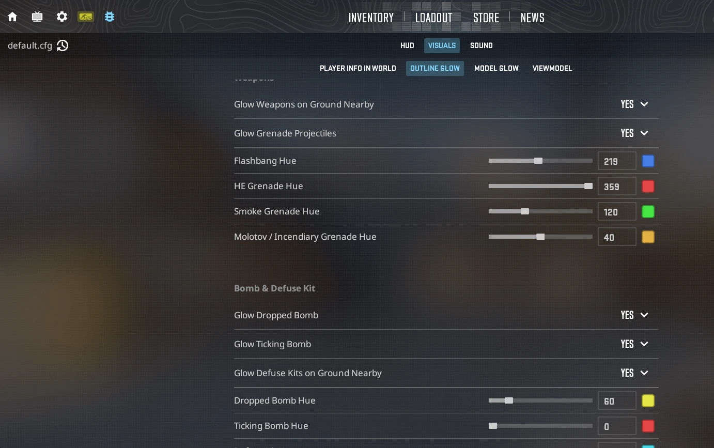
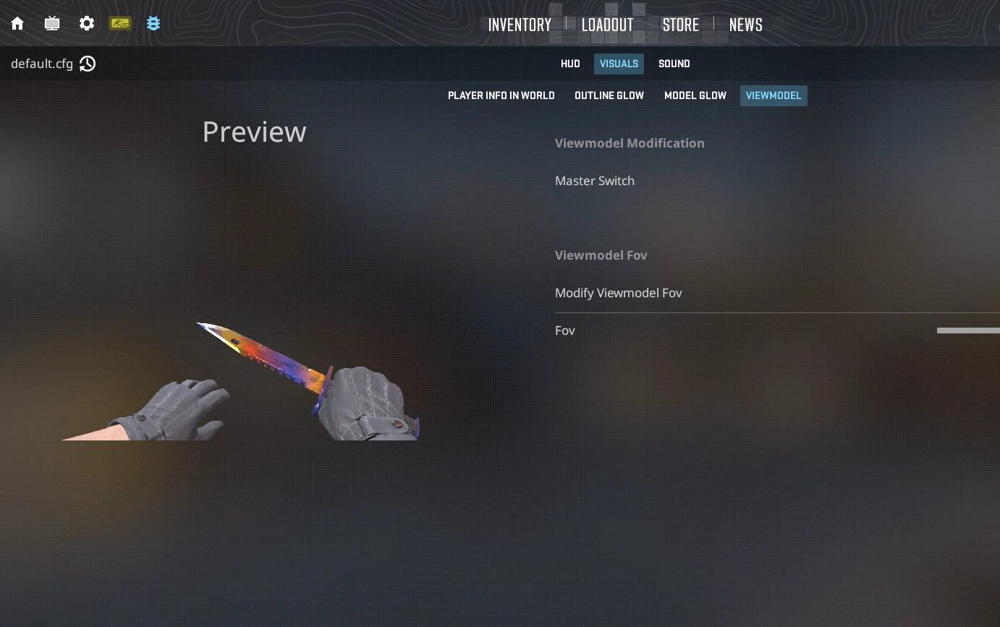
Download Osiris v2 internal
Download the free Osiris v2 internal and configure your CS2 features from one interface.
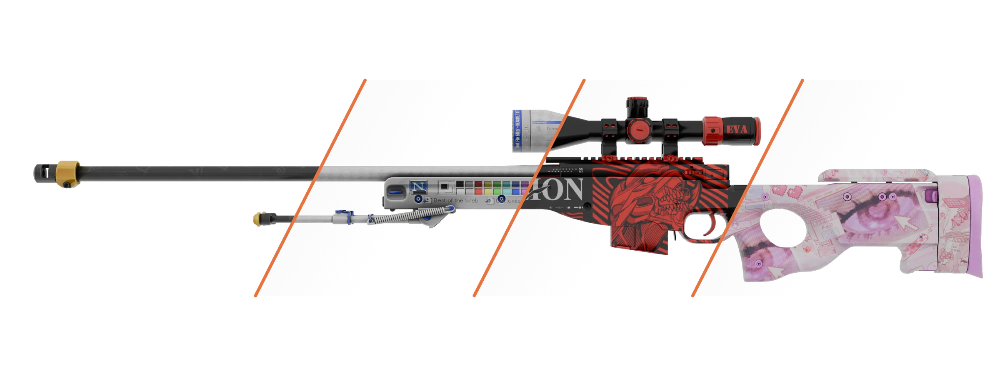
Your CS2 experience, your way
Explore the Osiris v2 internal feature set, then see the dedicated CS2 skinchanger section below.
What you can change in CS2
The Osiris catalogue covers custom skins, cases, knives, gloves, stickers, charms, and agents.
Custom skins and agents
800+ skins and agents made by artists, with options you will not find on Steam.
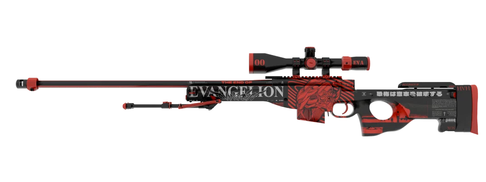
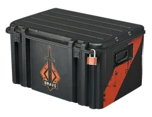
Cases and keys
Add and open cases, capsules, and souvenir packages.
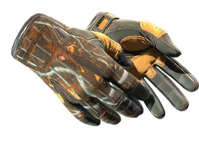
Knives and gloves
Every knife and glove model and finish in CS2.
Stickers and charms
Put stickers anywhere on a weapon and charms on any skin.
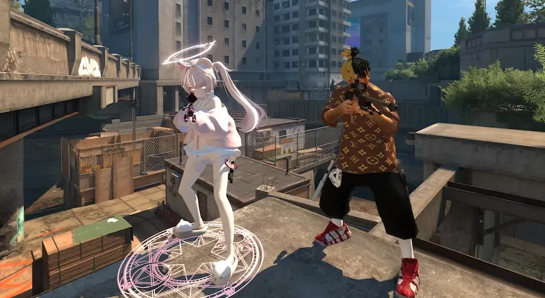
CT and T agents
Change character models for both sides, including custom agents.
Every item: from weapons to graffiti and medals
Full list
- Rifles
- Pistols
- SMGs
- Shotguns
- Machine guns
- Knives
- Gloves
- Zeus x27
- CT and T agents
- Stickers
- Charms
- Patches
- Music kits
- Medals
- Cases
- Keys
- Graffiti
Knives and gloves come in every model and finish CS2 has, from the standard ones to the rarest. Stickers go anywhere on a weapon, charms hang on any skin, and agents change separately for each side. MVP music, medals and graffiti change too - they show in your profile and during a match.
How to install
A simple walkthrough of the Osiris setup. Use the official distribution for your copy of the program.
Get Osiris
Obtain the installer from the official Osiris distribution.
Follow setup
Complete the included setup instructions for your system.
Set your preferences
Choose aimbot, WH, ESP, visual, and skinchanger settings in the interface.
Review your setup
Adjust the controls until the screen feels right for you.
The interface previews on this page show the Osiris settings you can explore after setup.
Osiris vs alternatives
A quick look at the aimbot, WH, ESP, visual, and skinchanger features shown on this page. Features in other tools vary by product and version.
| Feature | Osiris | Other tools |
|---|---|---|
| Aimbot, WH, and ESP | Shown | Varies |
| ESP and glow controls | Shown | Varies |
| Skinchanger preview | Shown | Varies |
| Organized settings | Shown | Varies |
| English and Russian website | Shown | Varies |
Every detail can make it yours
Osiris v2 internal features
Aimbot, wallhack, ESP, visuals, and skinchanger controls for CS2.
-
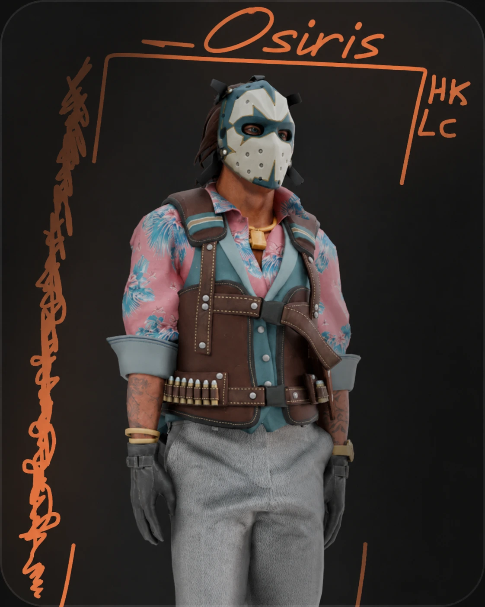
Aimbot, WH, and ESP
See how Osiris wallhack and ESP information appears in game.
-
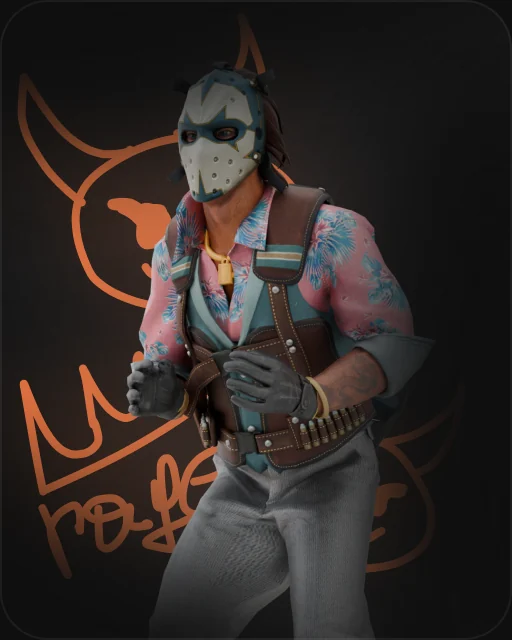
ESP and glow
Adjust aimbot options and aim support from a single panel.
-
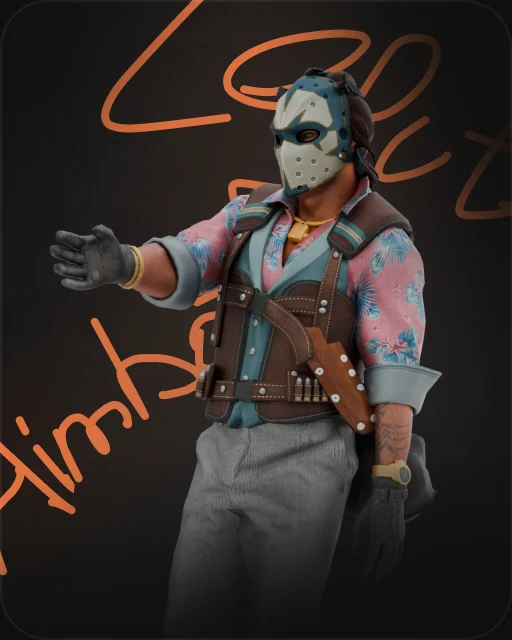
Skinchanger
Preview skins, knives, gloves, agents, stickers, and charms.
-
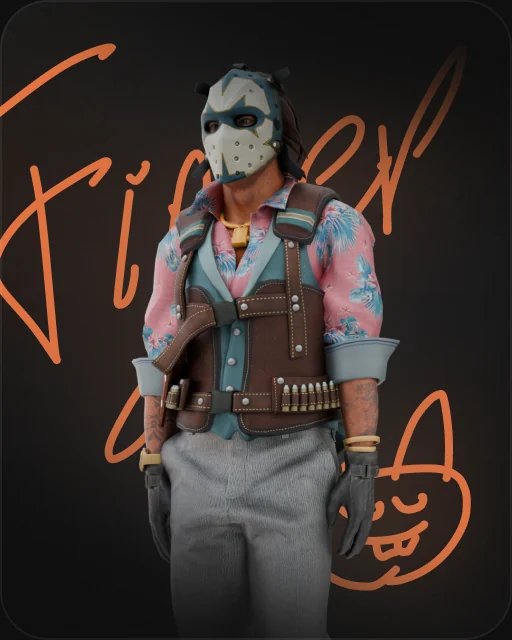
Flexible configuration
Keep every Osiris v2 internal feature organized in one place.
And more to explore. These screens show the Osiris v2 internal feature set.
Frequently asked questions about Osiris
-
Osiris v2 internal includes aimbot, wallhack, ESP, visual controls, and a dedicated skinchanger section.
-
-
-
-
-
Download Osiris v2 internal for CS2
Download Osiris v2 internal for free now and start using its aimbot, wallhack, ESP, visuals, and skinchanger features.